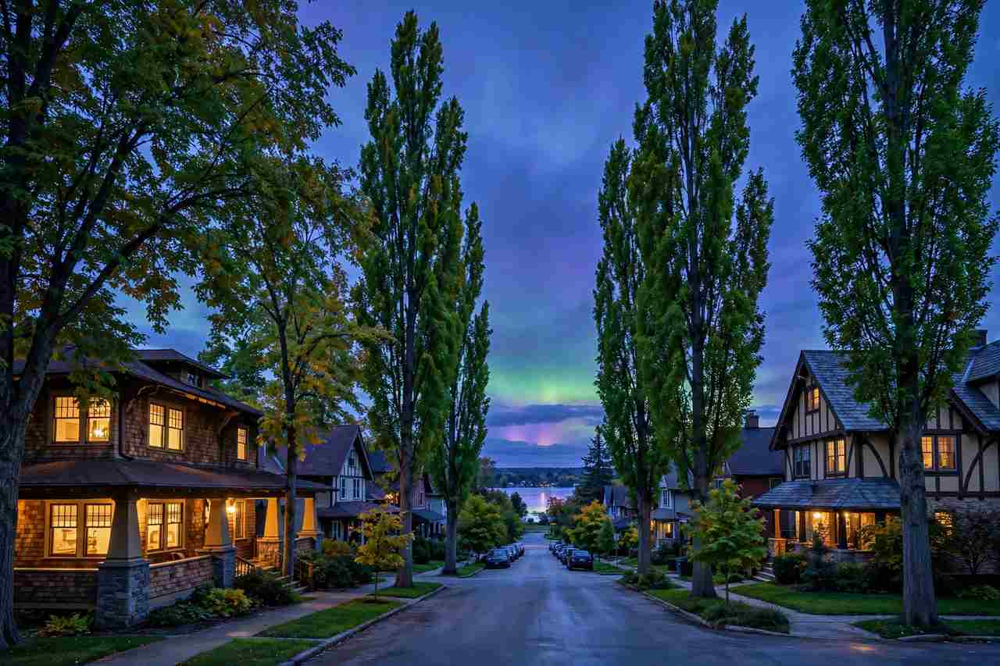

Rodent Control · Barnesville, MN
Licensed Rodent Control in Barnesville, MN
Hearing scratching at night or finding droppings in Barnesville? Murvo is a rodent-only specialist offering same-day service from local crews. We identify the species, remove the infestation, clean up the mess, and exclude rodents for good. Pricing is flat-rate and quoted in writing, the work is guaranteed in writing, and coverage extends across Clay County for homes and businesses alike. Crews route daily across Clay County - 1 ZIP codes covered, including 56514.
24/7Availability
1ZIP codes covered
Same-dayResponse
Licensed · Upfront options · Written guarantees · Fully insured
Barnesville at a glance
Local Rodent Control for Barnesville, MN.
Clay County
Countywestern Minnesota
RegionSt. Cloud · 132 mi
Nearest metro198 miles northwest of Saint Paul
From Saint Paul1
ZIP codes covered Service by service in Barnesville
Rodent Control Services Available in Barnesville
The full range of residential and commercial rodent services in Barnesville and Clay County - built around the species and housing here, from emergency removal and same-day control to exclusion, proofing, trapping, cleanup, and damage repair. Every service below is quoted flat-rate in writing and backed by our workmanship guarantee.
- 01Rodent Control↗
- 02Rodent Inspection↗
- 03Rodent Removal↗
- 04Rodent Exclusion↗
- 05Rodent Proofing↗
- 06Rat Control↗
- 07Mice Control↗
- 08Mouse Removal↗
- 09Rat Removal↗
- 10Rodent Trapping↗
- 11Rodent Baiting↗
- 12Rodenticide Application↗
- 13Attic Rodent Removal↗
- 14Crawl Space Rodent Removal↗
- 15Wall Rodent Removal↗
- 16Kitchen Rodent Control↗
- 17Garage Rodent Control↗
- 18Commercial Rodent Control↗
- 19Residential Rodent Control↗
- 20Emergency Rodent Removal↗
- 21Same-Day Rodent Control↗
- 22Rodent Damage Repair↗
- 23Rodent Waste Cleanup↗
- 24Rodent Disinfection↗
- 25Rodent Odor Removal↗
- 26Dead Rodent Removal↗
- 27Rodent Dropping Cleanup↗
- 28Rodent Exclusion for Roofs↗
- 29Rodent Exclusion for Vents↗
- 30Rodent Exclusion for Chimneys↗
Rodent Control in Barnesville
Rodent Control in Barnesville
In Barnesville, vintage duplexes and stone homes, brick bungalows, older single-family homes, and farm and rural properties give rodents warmth, shelter, and easy routes through basement foundations, alley-facing garage doors, sewer laterals, and gaps around utility lines and sills, especially once nights turn cold across Clay County. Our licensed, insured technicians identify the species, map active runways, and build a control plan around your home rather than a generic spray. Every visit is documented with photos, trap records, and clear next steps for your household.
When you need rodent control in Barnesville, the job starts with what is actually happening in your part of Clay County. Murvo crews work Barnesville every week, so they know how Norway rat (Rattus norvegicus) and House mouse (Mus musculus) behave around vintage duplexes and stone homes, brick bungalows, older single-family homes, and farm and rural properties here - and where they get in: basement foundations, alley-facing garage doors, sewer laterals, and gaps around utility lines and sills. We arrive equipped for the full job, confirm the flat rate in writing before work begins, and cover the whole Barnesville area, including Baker, Rothsay. No call-center runaround and no open-ended hourly billing - just a local crew, a clear plan, and a written quote you approve first. Around Baker, Rothsay, Sabin, the pattern is similar: House mouse (Mus musculus) finds basement foundations, alley-facing garage doors, sewer laterals, and gaps around utility lines and sills first, and lasting rodent control has to close those routes.
Consider how a visit unfolds. Inside, attic and crawl-space evidence shapes the trapping plan, which is adjusted visit by visit as numbers change. Cleanup guidance covers contaminated areas safely, and exclusion work closes the route permanently. Throughout, photographs and written notes keep you informed, so progress is something you can see and verify rather than something you are asked to trust. The technician walks the exterior before touching anything indoors, noting gaps, rub marks, and food sources. Photographs taken at the start make those later comparisons honest, because memory alone tends to blur the details.
Getting started takes one conversation, day or night, because our lines stay open 24/7. Work proceeds only after your approval, in stages you can follow, and a final walkthrough reviews every seal and every monitoring result before sign-off. We book a window that suits your household, confirm access needs in advance, and arrive prepared. Questions after sign-off are welcome at any hour, and the same written record helps any technician pick up your case immediately.
In most of Barnesville, we can offer a same-day appointment for rodent control, and our lines are open 24/7 for urgent cases like scratching in the walls or a rodent in a living area. Your technician inspects first, explains the plan, and quotes a flat rate in writing before any work begins, so help starts fast without surprises. A Barnesville inspection confirms it on site - dropping size, gnaw marks, and entry points tell the story quickly.
Murvo does not quote rodent control sight unseen, because species, activity, and sealing needs change the work involved. After inspection you get one flat-rate written quote, and that is the figure you pay. As national context only, Angi's 2026 figures put rat and mouse removal and control at an average of $396, with a typical range of $189 to $655 — a benchmark, not a Murvo price.
Rodent Inspection in Barnesville
Rodent Inspection in Barnesville
A proper rodent inspection in Barnesville answers three questions: which species is active, where is it nesting, and how is it getting inside? Our licensed, insured technicians document runways, droppings, and damage with photos and plain-language notes, then separate urgent fixes from preventive ones. There is no pressure to proceed, and every recommendation is priced in writing first.
In Barnesville, rodent inspection is not a generic spray-and-go service. Rodents exploit basement foundations, alley-facing garage doors, sewer laterals, and gaps around utility lines and sills in vintage duplexes and stone homes, brick bungalows, older single-family homes, and farm and rural properties, and a fix that ignores those routes does not last. Murvo's Barnesville team inspects first, shows you the evidence - droppings, gnaw marks, entry gaps - and then lays out the work with a flat-rate written quote. We serve all of Clay County from Barnesville, including Baker, Rothsay, and every job is covered by our written workmanship guarantee. In Barnesville, rodent inspection calls most often involve vintage duplexes and stone homes, brick bungalows, older single-family homes, and farm and rural properties, where basement foundations, alley-facing garage doors, sewer laterals, and gaps around utility lines and sills decide whether the fix holds.
We listen first: when you hear noises, and where, often points straight to the most active nesting areas. The visit ends with a written report covering species, entry points, contamination, and the removal and exclusion steps we recommend, each with a flat-rate price. Technicians then trace active runways, identify whether droppings belong to Norway rat (Rattus norvegicus) or House mouse (Mus musculus), and check insulation and wiring for damage. That detail stops you paying for treatment aimed at the wrong species or the wrong part of the building.
Your part is simple: point out noises, droppings, and any past problems. A background-checked technician arrives on time, protects access areas, and inspects inside and out against a set checklist. Before leaving, you walk through the evidence together, discuss priorities, and decide what happens next, with no obligation attached. Ours is everything else. If you decide to proceed, those findings become the working plan, so no second survey is needed before approved repairs begin.
You do not have to wait days for answers in Barnesville. Same-day rodent inspection appointments are available in most areas, urgent calls are taken 24/7, and most home inspections take under an hour. You finish the visit with photos, written findings, and flat-rate pricing for anything we recommend. In Clay County, most cases involve the Norway rat (Rattus norvegicus) and the House mouse (Mus musculus), so the inspection focuses on their routes first.
Nationally, a professional rodent inspection typically runs $100 to $200 according to Angi's 2026 data, and it is often credited toward the job if you proceed. Murvo confirms your exact rodent inspection price before the visit and quotes any follow-up work as a flat rate in writing after inspection, so the figure you approve is the figure you pay, with no hourly billing.
Rodent Removal in Barnesville
Rodent Removal in Barnesville
In vintage duplexes and stone homes, brick bungalows, older single-family homes, and farm and rural properties, removal fails when it ignores how rodents actually live: close to food, water, and undisturbed cover near basement foundations, alley-facing garage doors, sewer laterals, and gaps around utility lines and sills. Our rodent removal in Clay County starts by mapping that daily pattern, then removes animals room by room, including attics and garages, until monitoring, not optimism, says the home is clear.
In Barnesville, rodent removal is not a generic spray-and-go service. Rodents exploit basement foundations, alley-facing garage doors, sewer laterals, and gaps around utility lines and sills in vintage duplexes and stone homes, brick bungalows, older single-family homes, and farm and rural properties, and a fix that ignores those routes does not last. Murvo's Barnesville team inspects first, shows you the evidence - droppings, gnaw marks, entry gaps - and then lays out the work with a flat-rate written quote. We serve all of Clay County from Barnesville, including Baker, Rothsay, and every job is covered by our written workmanship guarantee. Homes near Baker tend to show activity first in Barnesville, which is why inspections start with basement foundations, alley-facing garage doors, sewer laterals, and gaps around utility lines and sills.
Removal here is measured in records, not impressions. Sealing recommendations follow immediately, because a clear home with open gaps will not stay clear for long in Barnesville. Each trap is numbered, mapped, and checked on schedule, and every catch is logged against its location. That log shows where activity concentrates, where it is fading, and where a placement needs to move. When the log stays empty across repeat checks, removal is genuinely finished. That record also protects you, because it shows exactly when activity ended rather than when visits simply stopped.
Call, describe the signs, and we will set a visit window, often for the same day. Return visits are already booked, so clearing, resetting, and progress updates happen without you chasing anyone for news. The first appointment confirms species and numbers, explains the trapping sequence, and produces your written quote. With approval, traps go in immediately. Photographs and catch records are shared as the program runs, giving you visible proof of progress rather than a verbal summary at the end.
When rodents are active indoors in Barnesville, waiting rarely helps. Rodent removal can usually start the same day you call, our line answers 24/7 for a rodent loose in a living area, and the first visit sets traps straight away. Scheduled returns then clear and reset them until monitoring shows the home is clear. In Clay County, most cases involve the Norway rat (Rattus norvegicus) and the House mouse (Mus musculus), so the inspection focuses on their routes first.
How many animals are active, which species they are, and how much sealing follows removal all shape the price, so we assess first and then quote one flat rate in writing. Angi's 2026 national context — an average of $396 and a typical $189 to $655 range for rat and mouse removal — is provided for comparison only; your written quote is the exact Murvo figure.
Rodent Exclusion in Barnesville
Rodent Exclusion in Barnesville
Trapping alone only buys time if rodents can walk straight back in. Rodent exclusion in Barnesville is the permanent fix: a full entry-point survey, then sealing with materials rodents cannot gnaw through. Murvo clears active animals first so none are sealed inside, gives one flat-rate written quote before work starts, and guarantees the workmanship on every seal installed.
Homeowners in Barnesville call Murvo for rodent exclusion because the problem here is specific: Norway rat (Rattus norvegicus) pressure around vintage duplexes and stone homes, brick bungalows, older single-family homes, and farm and rural properties, tight access at basement foundations, alley-facing garage doors, sewer laterals, and gaps around utility lines and sills, and activity that follows the local season. Our Clay County crews diagnose the real source before recommending work, explain the options in plain language, and quote one flat rate in writing. Across Barnesville - including Baker, Rothsay - every visit is backed by licensed, insured technicians and our written workmanship guarantee. In Barnesville, rodent exclusion calls most often involve vintage duplexes and stone homes, brick bungalows, older single-family homes, and farm and rural properties, where basement foundations, alley-facing garage doors, sewer laterals, and gaps around utility lines and sills decide whether the fix holds.
Exclusion begins with a full exterior survey, paying particular attention to junctions where different materials meet, because those seams and transitions open up as a building ages and settles. Each opening is sealed with materials matched to it: copper mesh packed into gaps, hardware cloth over vents, metal flashing at roof junctions, and quality sealants for smaller cracks. Door sweeps are fitted, pipe gaps closed, and specialist roof, vent, and chimney sealing finished to weatherproof standards. Active animals are trapped out first.
Before sealing day, confirm pets are secured and access to the roofline and foundation is clear. Afterwards you receive the photographs, the guarantee, and a date for the follow-up check that confirms everything is holding as intended. The crew then works through the agreed list, checks that no animals remain inside, and fits each seal cleanly. If monitoring ever finds fresh activity at a sealed point, that written inventory tells us exactly what to inspect first.
The first step is a survey, and in Barnesville we can often schedule that survey the same day you call about rodent exclusion. Sealing follows once active animals are cleared — nothing is ever sealed inside — and most homes are fully sealed within days, with entry points near wiring or food areas handled first. A Barnesville inspection confirms it on site - dropping size, gnaw marks, and entry points tell the story quickly.
For national context, Angi's 2026 data puts basic exclusion at $200 to $600, depending on access and the number of openings. That is a benchmark, not a Murvo price. After surveying your Barnesville home, we list every opening that needs sealing and quote one flat rate in writing, so you pay for the work your property actually needs and nothing more.
Rodent Proofing in Barnesville
Rodent Proofing in Barnesville
Proofing matters most where rodent pressure stays high all year: older vintage duplexes and stone homes, brick bungalows, older single-family homes, and farm and rural properties in Barnesville, homes near fields, water, or dense vegetation, and properties with cluttered garages or overhanging branches. Our plan separates quick wins you can handle yourself from specialist sealing that needs professional materials, keeping the whole program practical, transparent, and easy to stage over time.
Homeowners in Barnesville call Murvo for rodent proofing because the problem here is specific: Norway rat (Rattus norvegicus) pressure around vintage duplexes and stone homes, brick bungalows, older single-family homes, and farm and rural properties, tight access at basement foundations, alley-facing garage doors, sewer laterals, and gaps around utility lines and sills, and activity that follows the local season. Our Clay County crews diagnose the real source before recommending work, explain the options in plain language, and quote one flat rate in writing. Across Barnesville - including Baker, Rothsay - every visit is backed by licensed, insured technicians and our written workmanship guarantee. Around Baker, Rothsay, Sabin, the pattern is similar: House mouse (Mus musculus) finds basement foundations, alley-facing garage doors, sewer laterals, and gaps around utility lines and sills first, and lasting rodent proofing has to close those routes.
Proofing divides naturally into structure, surroundings, and habits. Structure means sealing utility entries, screening vents and chimneys, and fitting sweeps where doors leak light. Surroundings means trimming branches back from the roofline, moving clutter and timber away from walls, and reducing sheltered harborage. Habits means securing pet food, bird seed, and stored produce so the property stops advertising itself. Technicians assess all three layers in one survey and rank the combined findings by impact, not by what is easiest to sell.
Arrange a survey at a time that suits you; there is no emergency, so scheduling stays relaxed. You then receive a written quote separating essential work from optional improvements, and nothing proceeds without your say-so. Your technician walks every side of the property with you, photographs weak points, and talks through the plan in plain language. Staging the work is fine; essential sealing can proceed first while optional improvements wait until a season or budget that suits you better.
Rodent proofing is preventive, so there is rarely a rush, but surveys in Barnesville can often be arranged the same day you call, and always within a few days. Most proofing work is completed in a single visit once you approve the plan, and booking before colder weather gives your home protection ahead of the seasonal rush indoors. If you are seeing signs now, an inspection this week is the fastest way to know which situation you are in.
For national context, Angi's 2026 data puts exclusion, the core of proofing, at $200 to $600 for basic work. That figure is a benchmark, not a Murvo price. After surveying your Barnesville property, we separate quick homeowner wins from specialist sealing and quote the professional work as one flat rate in writing, so you can stage spending sensibly.
Rat Control in Barnesville
Rat Control in Barnesville
Rats are cautious, strong, and destructive, and a Barnesville sighting usually means a settled group is already traveling your fences, pipes, and rooflines nightly. Murvo's rat control identifies the species, maps those routes, and combines pre-baited trapping with removal and exclusion. You approve one flat-rate written quote before work starts, and monitoring continues until activity fully stops.
When you need rat control in Barnesville, the job starts with what is actually happening in your part of Clay County. Murvo crews work Barnesville every week, so they know how Norway rat (Rattus norvegicus) and House mouse (Mus musculus) behave around vintage duplexes and stone homes, brick bungalows, older single-family homes, and farm and rural properties here - and where they get in: basement foundations, alley-facing garage doors, sewer laterals, and gaps around utility lines and sills. We arrive equipped for the full job, confirm the flat rate in writing before work begins, and cover the whole Barnesville area, including Baker, Rothsay. No call-center runaround and no open-ended hourly billing - just a local crew, a clear plan, and a written quote you approve first. Homes near Baker tend to show activity first in Barnesville, which is why inspections start with basement foundations, alley-facing garage doors, sewer laterals, and gaps around utility lines and sills.
Safety shapes every placement decision. Where bait is genuinely necessary outdoors, it goes only inside locked, tamper-resistant stations, secured and labeled, never loose, and always alongside trapping and sealing rather than instead of them. Droppings are handled carefully: surfaces are disinfected before cleaning, never dry-swept, because disturbing dry material can spread contamination through the air. Traps are positioned away from pet routes and play areas and explained to the household in advance. Households receive that safety briefing in plain terms before the first station or trap is ever left behind.
Call for rat control in Barnesville and we will book an inspection, often the same day for active problems. The job closes only when monitoring confirms rats are gone and exclusion is complete. Your technician maps routes and harborage, explains the trapping plan, and gives you a flat-rate written quote before any work begins. Trapping visits then run on a set schedule, with placements adjusted as activity shifts. Your guarantee is confirmed in writing.
Rats do not wait, and neither do we: rat control in Barnesville can usually start with a same-day inspection, and urgent calls are answered 24/7. Pre-baiting begins on the first visit once you approve the written quote, traps are set as soon as rats are feeding confidently, and scheduled checks keep the program moving until activity stops. Around Barnesville, vintage duplexes and stone homes, brick bungalows, older single-family homes, and farm and rural properties give rodents the most cover, which is why entry points get checked before traps are set.
Species, colony size, and the number of entry points to seal all affect rat work, which is why Murvo inspects first and quotes one flat rate in writing. Angi's 2026 figures, given for national context only, average rat control and removal at $396 and typically run $189 to $655; the written quote for your Barnesville home is the exact price.
Mice Control in Barnesville
Mice Control in Barnesville
Small rice-like droppings, shredded nesting material, and faint scratching after dark are the classic signs mice have moved into a Barnesville home. Murvo's mice control surveys activity and entry points, traps in clusters along the routes mice travel nightly, and seals gaps as small as a pencil width. One flat-rate written quote covers the program before work begins.
Homeowners in Barnesville call Murvo for mice control because the problem here is specific: Norway rat (Rattus norvegicus) pressure around vintage duplexes and stone homes, brick bungalows, older single-family homes, and farm and rural properties, tight access at basement foundations, alley-facing garage doors, sewer laterals, and gaps around utility lines and sills, and activity that follows the local season. Our Clay County crews diagnose the real source before recommending work, explain the options in plain language, and quote one flat rate in writing. Across Barnesville - including Baker, Rothsay - every visit is backed by licensed, insured technicians and our written workmanship guarantee. Homes near Baker tend to show activity first in Barnesville, which is why inspections start with basement foundations, alley-facing garage doors, sewer laterals, and gaps around utility lines and sills.
Mice programs move quickly in Barnesville: a mice control survey can often be arranged the same day you call, and traps are set on that first visit once you approve the quote. Because mice investigate new objects fast, catches usually begin quickly, and scheduled check visits follow until a final confirmation shows activity has fully stopped. In Clay County, activity follows the local season, so timing the work matters as much as the method.
The number of rooms affected and the amount of sealing required set the price, so Murvo surveys first and quotes one flat rate in writing. For national context only, Angi's 2026 data averages rat and mouse control and removal at $396, typically $189 to $655 — not a Murvo price; your written quote is exact.
Mouse Removal in Barnesville
Mouse Removal in Barnesville
You found droppings in a cabinet or heard scratching in the attic of your Barnesville home, and you want the mice out, not managed indefinitely. Murvo's mouse removal locates nests and feeding areas room by room, runs a multi-trap program until catches reach zero, and seals access points behind it. One flat-rate written quote is agreed before work begins.
When you need mouse removal in Barnesville, the job starts with what is actually happening in your part of Clay County. Murvo crews work Barnesville every week, so they know how Norway rat (Rattus norvegicus) and House mouse (Mus musculus) behave around vintage duplexes and stone homes, brick bungalows, older single-family homes, and farm and rural properties here - and where they get in: basement foundations, alley-facing garage doors, sewer laterals, and gaps around utility lines and sills. We arrive equipped for the full job, confirm the flat rate in writing before work begins, and cover the whole Barnesville area, including Baker, Rothsay. No call-center runaround and no open-ended hourly billing - just a local crew, a clear plan, and a written quote you approve first. Around Baker, Rothsay, Sabin, the pattern is similar: House mouse (Mus musculus) finds basement foundations, alley-facing garage doors, sewer laterals, and gaps around utility lines and sills first, and lasting mouse removal has to close those routes.
For mice active in kitchens or living areas of your Barnesville home, mouse removal can often begin the same day you call. That first visit surveys nesting sites and sets traps as soon as you approve the quote, and because mice investigate traps quickly, catches usually start fast. Return visits continue until numbers reach zero. That is also why Murvo pairs removal with exclusion in Barnesville - treating the animal without closing basement foundations, alley-facing garage doors, sewer laterals, and gaps around utility lines and sills rarely lasts.
Mouse removal cost reflects the number of rooms involved and how much sealing is needed, which is why Murvo surveys first and quotes a flat rate in writing. For national context only, Angi's 2026 data averages rat and mouse removal at $396, typically $189 to $655. That benchmark is not a Murvo price; your written quote covers your exact program.
Rat Removal in Barnesville
Rat Removal in Barnesville
If a rat is loose in a living area tonight, call; our lines stay open 24/7. Murvo pairs urgent response with a documented plan: hygienic removal across repeat visits, evidence from monitoring at the end, and a final walkthrough, so clearance is demonstrated to you rather than simply announced.
When you need rat removal in Barnesville, the job starts with what is actually happening in your part of Clay County. Murvo crews work Barnesville every week, so they know how Norway rat (Rattus norvegicus) and House mouse (Mus musculus) behave around vintage duplexes and stone homes, brick bungalows, older single-family homes, and farm and rural properties here - and where they get in: basement foundations, alley-facing garage doors, sewer laterals, and gaps around utility lines and sills. We arrive equipped for the full job, confirm the flat rate in writing before work begins, and cover the whole Barnesville area, including Baker, Rothsay. No call-center runaround and no open-ended hourly billing - just a local crew, a clear plan, and a written quote you approve first. In Barnesville, rat removal calls most often involve vintage duplexes and stone homes, brick bungalows, older single-family homes, and farm and rural properties, where basement foundations, alley-facing garage doors, sewer laterals, and gaps around utility lines and sills decide whether the fix holds.
In Barnesville, rat removal can usually start the same day you call, with 24/7 answering for rats active in living areas. Pre-baiting begins on the first visit after you approve the written quote, and traps are set once rats feed confidently, typically within days. Repeat visits then run frequently until monitoring confirms the colony is gone. Murvo's Barnesville crews explain the finding either way, and the flat-rate quote leaves the decision with you.
Rat removal pricing depends on colony size, access, and the sealing needed afterwards, so Murvo assesses your property first and quotes a flat rate in writing. For national context only, Angi's 2026 data averages rat removal at $396, typically $189 to $655. That is a benchmark, not a Murvo price, and your written quote covers the full program described.
Rodent Trapping in Barnesville
Rodent Trapping in Barnesville
Why choose trapping over poison in a family home? Every result is visible, countable, and removable, with no chemicals loose indoors and no animals dying in hidden voids. Murvo offers snap, multi-catch, and live-capture options, explains each placement for pet and child safety, and guarantees the finished program in writing.
In Barnesville, rodent trapping is not a generic spray-and-go service. Rodents exploit basement foundations, alley-facing garage doors, sewer laterals, and gaps around utility lines and sills in vintage duplexes and stone homes, brick bungalows, older single-family homes, and farm and rural properties, and a fix that ignores those routes does not last. Murvo's Barnesville team inspects first, shows you the evidence - droppings, gnaw marks, entry gaps - and then lays out the work with a flat-rate written quote. We serve all of Clay County from Barnesville, including Baker, Rothsay, and every job is covered by our written workmanship guarantee. Homes near Baker tend to show activity first in Barnesville, which is why inspections start with basement foundations, alley-facing garage doors, sewer laterals, and gaps around utility lines and sills.
In Barnesville, rodent trapping can usually start the same day you call, with traps placed or pre-baiting begun on the first visit after you approve the quote. Mice often investigate within the first night; wary rats need a few days of pre-baiting before traps are set. Scheduled check visits then keep catches moving until numbers reach zero. A Barnesville inspection confirms it on site - dropping size, gnaw marks, and entry points tell the story quickly.
Rather than charging by the trap or by the visit, Murvo inspects first and quotes rodent trapping as one flat rate in writing for the complete program, including its check visits. Price depends on species, activity level, and how many checks are needed, and there is no hourly billing at any stage, so there are no per-visit surprises.
Rodent Baiting in Barnesville
Rodent Baiting in Barnesville
Baiting suits established rat activity outdoors or in garages around Barnesville, where droppings keep returning despite traps. Even then, our approach is exclusion-first: seal the entry points around basement foundations, alley-facing garage doors, sewer laterals, and gaps around utility lines and sills, trap what is already inside, and use locked stations only to reduce outdoor pressure. Stations are labeled, secured, photographed, and removed once monitoring shows activity has ended.
Homeowners in Barnesville call Murvo for rodent baiting because the problem here is specific: Norway rat (Rattus norvegicus) pressure around vintage duplexes and stone homes, brick bungalows, older single-family homes, and farm and rural properties, tight access at basement foundations, alley-facing garage doors, sewer laterals, and gaps around utility lines and sills, and activity that follows the local season. Our Clay County crews diagnose the real source before recommending work, explain the options in plain language, and quote one flat rate in writing. Across Barnesville - including Baker, Rothsay - every visit is backed by licensed, insured technicians and our written workmanship guarantee. In Barnesville, rodent baiting calls most often involve vintage duplexes and stone homes, brick bungalows, older single-family homes, and farm and rural properties, where basement foundations, alley-facing garage doors, sewer laterals, and gaps around utility lines and sills decide whether the fix holds.
Deliberate setup matters more than speed with rodent baiting, but the first step is still fast: an inspection in Barnesville can often be arranged the same day you call. Stations are placed only after activity is mapped and you approve the written quote and each location, then monitoring runs on a fixed schedule until consumption stops and activity is confirmed clear. The written quote for your Barnesville property will spell out exactly which of these applies before any work starts.
How many locked stations your property needs and how long monitoring runs determine the cost, so Murvo inspects and maps activity first, then quotes one flat rate in writing covering placement and scheduled checks. There are no per-visit surprises, and because the approach is exclusion-first, the aim is to reduce and eventually remove stations rather than maintain them forever.
Rodenticide Application in Barnesville
Rodenticide Application in Barnesville
Regulation shapes product choice in Minnesota: California restricts anticoagulant rodenticides, other states impose their own limits, and Murvo complies with every applicable rule. You receive copies of product labels and safety information for anything applied at your Barnesville property, and we talk through children, pets, livestock, and wildlife concerns before any flat-rate written quote is agreed.
In Barnesville, rodenticide application is not a generic spray-and-go service. Rodents exploit basement foundations, alley-facing garage doors, sewer laterals, and gaps around utility lines and sills in vintage duplexes and stone homes, brick bungalows, older single-family homes, and farm and rural properties, and a fix that ignores those routes does not last. Murvo's Barnesville team inspects first, shows you the evidence - droppings, gnaw marks, entry gaps - and then lays out the work with a flat-rate written quote. We serve all of Clay County from Barnesville, including Baker, Rothsay, and every job is covered by our written workmanship guarantee. In Barnesville, rodenticide application calls most often involve vintage duplexes and stone homes, brick bungalows, older single-family homes, and farm and rural properties, where basement foundations, alley-facing garage doors, sewer laterals, and gaps around utility lines and sills decide whether the fix holds.
In Barnesville, rodenticide application begins with an inspection we can often schedule the same day you call, because no responsible application happens without one. If treatment is justified and you approve the written quote, locked stations are installed on that visit. Monitoring then runs on schedule, and treatment stops as soon as data shows activity has ended. Around Barnesville, vintage duplexes and stone homes, brick bungalows, older single-family homes, and farm and rural properties give rodents the most cover, which is why entry points get checked before traps are set.
Application cost depends on the number of locked stations, the product required under Minnesota rules, and how long monitoring runs. Murvo inspects first, explains whether trapping or exclusion could avoid chemical control entirely, and then quotes one flat rate in writing before work begins. The quote covers scheduled monitoring visits, so there are no per-visit surprises later.
Attic Rodent Removal in Barnesville
Attic Rodent Removal in Barnesville
Most Barnesville attic jobs start with nighttime scratching that grows bolder over a week. Murvo inspects the attic, roof, and eaves together, identifies whether Norway rat (Rattus norvegicus) or House mouse (Mus musculus) is overhead, traps up there, and seals the roofline afterwards. One flat-rate written quote is agreed before removal begins.
When you need attic rodent removal in Barnesville, the job starts with what is actually happening in your part of Clay County. Murvo crews work Barnesville every week, so they know how Norway rat (Rattus norvegicus) and House mouse (Mus musculus) behave around vintage duplexes and stone homes, brick bungalows, older single-family homes, and farm and rural properties here - and where they get in: basement foundations, alley-facing garage doors, sewer laterals, and gaps around utility lines and sills. We arrive equipped for the full job, confirm the flat rate in writing before work begins, and cover the whole Barnesville area, including Baker, Rothsay. No call-center runaround and no open-ended hourly billing - just a local crew, a clear plan, and a written quote you approve first. Around Baker, Rothsay, Sabin, the pattern is similar: House mouse (Mus musculus) finds basement foundations, alley-facing garage doors, sewer laterals, and gaps around utility lines and sills first, and lasting attic rodent removal has to close those routes.
Attic work follows Inspect, Remove, Exclude, Clean, and Monitor. Targeted, humane trapping is then set in the attic to clear active animals quickly, with checks on schedule. Once clear, roofline entry points are sealed with metal mesh and flashing as part of wider proofing, and dropping cleanup and disinfection are arranged where insulation is contaminated. A detailed inspection covers the attic, roof, and eaves, identifying species, nests, droppings, and gnawed cables. Monitoring traps stay briefly after sealing to confirm the attic is empty and quiet.
After booking, we confirm safe attic access and any pets or stored items to work around. On arrival, your background-checked technician inspects, explains the plan in plain language, and starts trapping once you approve the written quote. Follow-up visits are booked ahead to clear traps and complete sealing. A final monitoring check and walkthrough confirm the result before we close the job. Insulation and wiring findings are reported to you too.
In Barnesville, attic rodent removal visits are often available the same day, and we prioritize attics where chewed wiring creates a fire risk. Trapping starts on the first visit after you approve the written quote, checks run on schedule, and most attics are cleared and sealed within days, with monitoring left briefly to confirm nothing remains inside. In Clay County, most cases involve the Norway rat (Rattus norvegicus) and the House mouse (Mus musculus), so the inspection focuses on their routes first.
Activity levels, roofline sealing, and whether contaminated insulation needs cleanup all affect attic pricing, so Murvo inspects first and quotes one flat rate in writing for the removal program. Cleanup options are priced separately in writing before you decide, so nothing is added once work is underway.
Crawl Space Rodent Removal in Barnesville
Crawl Space Rodent Removal in Barnesville
Murvo favors trapping and physical exclusion under Barnesville homes over poison, an approach that protects pets that may access the crawl space and avoids carcasses hidden where they cannot be reached. Licensed, insured technicians document every sealed opening with photographs, refit access panels securely, and back the finished work with our written workmanship guarantee and monitoring checks.
In Barnesville, crawl space rodent removal is not a generic spray-and-go service. Rodents exploit basement foundations, alley-facing garage doors, sewer laterals, and gaps around utility lines and sills in vintage duplexes and stone homes, brick bungalows, older single-family homes, and farm and rural properties, and a fix that ignores those routes does not last. Murvo's Barnesville team inspects first, shows you the evidence - droppings, gnaw marks, entry gaps - and then lays out the work with a flat-rate written quote. We serve all of Clay County from Barnesville, including Baker, Rothsay, and every job is covered by our written workmanship guarantee. Homes near Baker tend to show activity first in Barnesville, which is why inspections start with basement foundations, alley-facing garage doors, sewer laterals, and gaps around utility lines and sills.
Cleanup below a home follows CDC guidance: droppings and nesting debris are never dry-swept, because disturbing them can spread contamination; surfaces are disinfected first, then waste is bagged and removed by technicians in protective equipment. We also trace connections upward through wall voids, since treating the crawl space alone misses rodents traveling to the attic. Photographs of finished sealing are supplied with your guarantee paperwork, and access panels are refitted securely after every visit. Moisture problems found are reported with practical recommendations.
Schedule an under-home inspection, usually within days and sooner when odors reach living areas. Clearance, vent screening, and cleanup then follow in sequence, with monitoring left in place until the space below is confirmed quiet. Your technician photographs conditions below, explains findings in plain language, and confirms the written quote before any trapping. Photographs from below the home accompany the final paperwork, which is especially useful because few homeowners ever see that space themselves.
For crawl space rodent removal in Barnesville, inspections are usually arranged within a few days — and sooner when odors are drifting into living areas or activity sounds heavy. Trapping begins on the first visit after you approve the written quote, clearance and sealing follow in sequence, and monitoring stays in place until the space below is confirmed quiet. In Clay County, most cases involve the Norway rat (Rattus norvegicus) and the House mouse (Mus musculus), so the inspection focuses on their routes first.
Crawl-space costs depend on access, how many vents and gaps need sealing, and whether waste cleanup is required, so Murvo inspects first and quotes one flat rate in writing. If extra vents need sealing within the agreed scope, there are no surprises, and cleanup options are priced in writing before you decide whether to include them.
Wall Rodent Removal in Barnesville
Wall Rodent Removal in Barnesville
Most Barnesville wall calls start at night, when scratching behind the drywall makes sleep impossible. Murvo locates the activity by listening, tracing entry routes, and using inspection cameras where access allows, then traps at void access points. A flat-rate written quote comes before any access work is considered.
When you need wall rodent removal in Barnesville, the job starts with what is actually happening in your part of Clay County. Murvo crews work Barnesville every week, so they know how Norway rat (Rattus norvegicus) and House mouse (Mus musculus) behave around vintage duplexes and stone homes, brick bungalows, older single-family homes, and farm and rural properties here - and where they get in: basement foundations, alley-facing garage doors, sewer laterals, and gaps around utility lines and sills. We arrive equipped for the full job, confirm the flat rate in writing before work begins, and cover the whole Barnesville area, including Baker, Rothsay. No call-center runaround and no open-ended hourly billing - just a local crew, a clear plan, and a written quote you approve first. Around Baker, Rothsay, Sabin, the pattern is similar: House mouse (Mus musculus) finds basement foundations, alley-facing garage doors, sewer laterals, and gaps around utility lines and sills first, and lasting wall rodent removal has to close those routes.
Wall work follows Inspect, Remove, Exclude, Clean, and Monitor. Trapping is then placed at void access points to draw rodents out, and technicians return to clear traps and adjust positions if monitoring shows activity has moved to another void. We start by locating activity precisely, tracing entry routes from the roofline, baseboards, and pipe runs into the void, and using cameras where access allows. Only where an animal cannot be reached any other way do we agree a minimal, repairable access cut.
Book wall rodent removal in Barnesville and we will schedule a locating visit, often the same day for loud or persistent wall noise. Your technician traces the activity, explains exactly where the animal is traveling, and confirms a flat-rate written quote before any access work, so wall work never becomes an open-ended bill. Trapping and any agreed access follow, then sealing, sanitation, and monitoring complete the job. Your written guarantee covers the completed work.
Persistent wall scratching in Barnesville often qualifies for a same-day locating visit, especially when it is keeping you awake. On that first visit, once you approve the written quote, traps are set at void access points; because rodents travel the void nightly, results usually follow within days. Quiet-wall checks confirm the silence before we sign off. A Barnesville inspection confirms it on site - dropping size, gnaw marks, and entry points tell the story quickly.
Wall work pricing depends on how precisely activity can be located and whether a minimal access cut is needed, which is why Murvo locates the activity first and quotes a flat rate in writing. That way wall access work never becomes an open-ended bill, and the quote covers the trapping, sealing, and monitoring described in your plan.
Kitchen Rodent Control in Barnesville
Kitchen Rodent Control in Barnesville
Kitchens in vintage duplexes and stone homes, brick bungalows, older single-family homes, and farm and rural properties offer rodents food, water and warmth behind fridges, ovens and sinks. Murvo's kitchen rodent control in Barnesville starts behind those appliances, removes the animals without loose poison near food, and leaves simple hygiene notes covering bins, pet bowls and rarely moved appliances. Background-checked technicians carry out every visit.
In Barnesville, kitchen rodent control is not a generic spray-and-go service. Rodents exploit basement foundations, alley-facing garage doors, sewer laterals, and gaps around utility lines and sills in vintage duplexes and stone homes, brick bungalows, older single-family homes, and farm and rural properties, and a fix that ignores those routes does not last. Murvo's Barnesville team inspects first, shows you the evidence - droppings, gnaw marks, entry gaps - and then lays out the work with a flat-rate written quote. We serve all of Clay County from Barnesville, including Baker, Rothsay, and every job is covered by our written workmanship guarantee. Coverage for kitchen rodent control spans 1 ZIP codes in Clay County, including 56514.
Cupboard hinges, kick plates and pipe collars often reveal more than the room itself. Removal stays targeted and discreet. Afterward, sealing closes the routes we documented, surfaces touched by droppings receive proper cleaning, and we walk through small habits that help: lids sealed, spills wiped from hidden edges, and pet food lifted overnight. We examine those details first, then work outward into adjoining voids and the basement or garage beyond. Monitoring points stay in place until repeat visits show the kitchen has gone quiet.
Tell us what you noticed, and we will schedule a visit that fits around meals and family routines. With your approval, trapping and sealing begin, followed by cleaning of affected areas. The technician inspects first, explains the findings in plain terms, and puts the price in writing. Later checks review traps and monitors, and we do not close the visit series until the kitchen shows no fresh signs of rodent activity at all.
Our phone lines are open 24/7, and kitchen cases involving droppings near food preparation areas are treated as a priority. In many Barnesville cases we can arrange a same-day visit, subject to technician availability. Call, describe what you have found, and we will offer the earliest appointment we can. A Barnesville inspection confirms it on site - dropping size, gnaw marks, and entry points tell the story quickly.
For national context, Angi's 2026 figures put rat extermination at $189-$655, averaging $396, but those figures are not Murvo prices. What your kitchen needs — trapping, sealing and follow-up monitoring — is assessed on site first. Murvo then provides one flat-rate written quote with no hourly billing, and work only begins after you approve it.
Garage Rodent Control in Barnesville
Garage Rodent Control in Barnesville
That torn seed bag in the corner matters more than it looks. Garages shelter Norway rat (Rattus norvegicus) and House mouse (Mus musculus) close to stored food, soft nesting material and an easy path indoors. Murvo's garage rodent control in Barnesville removes them, seals the door line and walls, and starts with a flat-rate written quote you approve first.
Homeowners in Barnesville call Murvo for garage rodent control because the problem here is specific: Norway rat (Rattus norvegicus) pressure around vintage duplexes and stone homes, brick bungalows, older single-family homes, and farm and rural properties, tight access at basement foundations, alley-facing garage doors, sewer laterals, and gaps around utility lines and sills, and activity that follows the local season. Our Clay County crews diagnose the real source before recommending work, explain the options in plain language, and quote one flat rate in writing. Across Barnesville - including Baker, Rothsay - every visit is backed by licensed, insured technicians and our written workmanship guarantee. Homes near Baker tend to show activity first in Barnesville, which is why inspections start with basement foundations, alley-facing garage doors, sewer laterals, and gaps around utility lines and sills.
The garage process pairs removal with long-term proofing. Technicians remove rodents and nests, disinfect contaminated areas where needed, and seal the gaps mice and rats squeeze through, remembering mice need only a very small opening. We check vehicle wiring and stored soft furnishings for gnaw damage, recommend sealed containers instead of cardboard, and set monitoring points to verify the space stays clear. The aim is a garage that no longer shelters rodents or feeds them into your home. Safety of occupants and pets guides every method chosen.
Once booked, your Murvo technician arrives at the agreed time, walks the garage with you and inspects doors, walls and storage. You receive a flat-rate written quote before work starts. Approved work covers trapping, nest removal and sealing, carried out by a licensed, insured technician. We return for monitoring checks, confirm the garage is clear, and leave storage advice behind. All work is covered by our written workmanship guarantee. We leave the area tidy when the work finishes.
We answer calls 24/7 and treat garages with active nesting, chewed wiring or rodents moving into the house as urgent. Same-day appointments in Barnesville are often available, depending on technician schedules. Call with a description of the signs you have seen and we will offer you the earliest visit we can. The written quote for your Barnesville property will spell out exactly which of these applies before any work starts.
As a national benchmark, Angi's 2026 data shows rat extermination ranging from $189-$655, with an average of $396; that is context only, not a Murvo price. Garage work varies with size, activity and the proofing doors and walls require. After inspecting, Murvo quotes one flat rate in writing for trapping, nest removal, sealing and monitoring, for your approval before anything starts.
Commercial Rodent Control in Barnesville
Commercial Rodent Control in Barnesville
One rodent sighting can close a restaurant, fail a food-safety audit or destroy stock in a warehouse. Our commercial rodent control in Barnesville protects restaurants, warehouses and commercial sites with discreet service, monitored trapping, durable exclusion and audit-ready documentation that keeps inspectors and auditors satisfied. Licensed and insured, Murvo backs every job with a written workmanship guarantee.
Homeowners in Barnesville call Murvo for commercial rodent control because the problem here is specific: Norway rat (Rattus norvegicus) pressure around vintage duplexes and stone homes, brick bungalows, older single-family homes, and farm and rural properties, tight access at basement foundations, alley-facing garage doors, sewer laterals, and gaps around utility lines and sills, and activity that follows the local season. Our Clay County crews diagnose the real source before recommending work, explain the options in plain language, and quote one flat rate in writing. Across Barnesville - including Baker, Rothsay - every visit is backed by licensed, insured technicians and our written workmanship guarantee. Homes near Baker tend to show activity first in Barnesville, which is why inspections start with basement foundations, alley-facing garage doors, sewer laterals, and gaps around utility lines and sills.
Programs follow Inspect, Remove, Exclude, Clean and Monitor. Staff receive simple training pointers so your team spots early droppings or gnawing before a small issue becomes an audit failure. Service is scheduled around trading hours, and urgent sightings during trading are handled with particular discretion to protect your reputation with waiting customers. Technicians map activity with monitoring points, trap discreetly away from customers, and proof dock doors, vents and pipe penetrations against re-entry. Each stage is recorded on your written service report.
After you make contact, a surveyor visits at a time that suits trading, inspects the whole site and identifies risks. You receive a written proposal with flat-rate pricing for initial work before anything starts. Approved work begins discreetly, with reports after every visit for your audit file. Monitoring continues on schedule, trends are reviewed with you, and the program adjusts as activity falls. Emergency response is available 24/7 for urgent sightings.
Our commercial lines are open 24/7, and live sightings during trading hours are treated as emergencies and handled discreetly. Response in Barnesville depends on technician availability, but we will always offer the earliest visit we can and advise on immediate steps to protect stock, customers and your audit position. That is also why Murvo pairs removal with exclusion in Barnesville - treating the animal without closing basement foundations, alley-facing garage doors, sewer laterals, and gaps around utility lines and sills rarely lasts.
For wider context, Angi's 2026 figures put rat extermination at $189-$655, averaging $396 nationally, though commercial sites are scoped individually and those figures are not Murvo prices. Site size, sector, activity and the exclusion and monitoring required all shape the cost. Murvo surveys first, then quotes a flat rate in writing for initial work or a clear scheduled-service price for an ongoing program, with reports included for your audit file.
Residential Rodent Control in Barnesville
Residential Rodent Control in Barnesville
Murvo is a rodent-only specialist, and homes are where that focus counts most. In Barnesville we inspect attics, crawl spaces, garages and kitchens as one connected system, then remove, exclude, clean and monitor. You approve a flat-rate written quote before any work begins. It is a complete service, not a quick spray.
In Barnesville, residential rodent control is not a generic spray-and-go service. Rodents exploit basement foundations, alley-facing garage doors, sewer laterals, and gaps around utility lines and sills in vintage duplexes and stone homes, brick bungalows, older single-family homes, and farm and rural properties, and a fix that ignores those routes does not last. Murvo's Barnesville team inspects first, shows you the evidence - droppings, gnaw marks, entry gaps - and then lays out the work with a flat-rate written quote. We serve all of Clay County from Barnesville, including Baker, Rothsay, and every job is covered by our written workmanship guarantee. Seasonal timing matters for residential rodent control in Barnesville: rodents surge in Barnesville from October through April.
We treat the home as a system, because rodents rarely stay in one room. Technicians trace routes between roof, walls, garage and kitchen, set traps along real runways, and seal entry points with durable, gnaw-resistant materials once animals are out. Contaminated nesting material is removed safely and affected areas disinfected. Advice on food storage, pet food and garden attractants is included, so the conditions that drew rodents in are removed alongside the rodents themselves. Your technician explains each stage as the work progresses.
Book a visit and tell us about pets, children and where signs appeared. Your technician inspects the property, talks through what was found without jargon, and quotes the complete plan in writing. After approval, removal, sealing and cleaning proceed in a sensible sequence. We return for scheduled checks, share what each check shows, and finish only when monitoring confirms the home is clear. Prevention notes tailored to your layout are left with you at the end.
We are available 24/7 by phone, and homes with rodents in living areas, kitchens or children's bedrooms are prioritized. Same-day visits in Barnesville are often possible, subject to technician availability. Tell us what you have seen or heard, and we will offer the earliest appointment available and advise what to do meanwhile. A Barnesville inspection confirms it on site - dropping size, gnaw marks, and entry points tell the story quickly.
Cost depends on the species, how established the infestation is, and how much exclusion and cleanup your home needs. Murvo inspects first, then quotes one flat rate in writing covering removal, sealing, cleaning and monitoring, with no hourly charges or add-on surprises. You approve the price before work begins, and everything is backed by our written workmanship guarantee.
Emergency Rodent Removal in Barnesville
Emergency Rodent Removal in Barnesville
Panic is a normal reaction to a rat in the kitchen. Take a breath, keep people and pets back, and call us. In Barnesville, our emergency team assesses the risk first, removes the animal, checks for others nearby, and secures the opening it used, so one frightening night does not become a longer problem.
When you need emergency rodent removal in Barnesville, the job starts with what is actually happening in your part of Clay County. Murvo crews work Barnesville every week, so they know how Norway rat (Rattus norvegicus) and House mouse (Mus musculus) behave around vintage duplexes and stone homes, brick bungalows, older single-family homes, and farm and rural properties here - and where they get in: basement foundations, alley-facing garage doors, sewer laterals, and gaps around utility lines and sills. We arrive equipped for the full job, confirm the flat rate in writing before work begins, and cover the whole Barnesville area, including Baker, Rothsay. No call-center runaround and no open-ended hourly billing - just a local crew, a clear plan, and a written quote you approve first. Seasonal timing matters for emergency rodent removal in Barnesville: rodents surge in Barnesville from October through April.
We triage every emergency call by risk: animals in living space, food contamination, electrical damage and vulnerable occupants come first. On site, the technician isolates the affected area, removes the rodents, and inspects connected voids and entry points such as basement foundations, alley-facing garage doors, sewer laterals, and gaps around utility lines and sills. Temporary securing is completed the same visit where full exclusion needs follow-up. Contaminated areas are disinfected following safe practice, and a clear plan is agreed for any remaining trapping, sealing or cleanup work. Each stage is recorded on your written service report.
Start by closing the door on the affected room if you safely can. At your door, inspection and a written quote come before any removal. Once approved, work proceeds right away: the rodent is removed, entry points are secured, and affected surfaces are treated. When you ring, we note the details, agree a visit, and talk through simple precautions for the wait. Follow-up visits then verify the property has settled and no further animals remain inside.
Our lines are open 24/7, every day, and emergency calls in Barnesville are triaged by risk, with live rodents in living areas, food contamination and chewed wiring prioritized. We will offer the earliest visit our technicians can reach and talk you through simple steps to keep everyone safe until we arrive. In Clay County, most cases involve the Norway rat (Rattus norvegicus) and the House mouse (Mus musculus), so the inspection focuses on their routes first.
Emergency pricing depends on where the rodents are, how many are involved, and what securing, cleanup or follow-up the property needs. Murvo inspects on arrival and quotes one flat rate in writing before work starts, with no hourly billing, even for urgent callouts. You approve the price first, and the work is backed by our written workmanship guarantee.
Same-Day Rodent Control in Barnesville
Same-Day Rodent Control in Barnesville
Whether it is Norway rat (Rattus norvegicus) in the attic or House mouse (Mus musculus) under the sink, acting today stops breeding, damage and contamination getting worse. Our same-day rodent control in Barnesville gets a technician out as quickly as schedules allow, then follows through with proofing, cleanup and monitoring until activity ends.
In Barnesville, same-day rodent control is not a generic spray-and-go service. Rodents exploit basement foundations, alley-facing garage doors, sewer laterals, and gaps around utility lines and sills in vintage duplexes and stone homes, brick bungalows, older single-family homes, and farm and rural properties, and a fix that ignores those routes does not last. Murvo's Barnesville team inspects first, shows you the evidence - droppings, gnaw marks, entry gaps - and then lays out the work with a flat-rate written quote. We serve all of Clay County from Barnesville, including Baker, Rothsay, and every job is covered by our written workmanship guarantee. Coverage for same-day rodent control spans 1 ZIP codes in Clay County, including 56514.
Calling early gives the day structure. Gaps are logged and either sealed then or scheduled promptly, contaminated areas are addressed, and monitoring dates are set before we leave. We gather the key facts by phone, then the technician begins on site with evidence: droppings, gnaw marks, sounds and likely entry points such as basement foundations, alley-facing garage doors, sewer laterals, and gaps around utility lines and sills. Traps are set during that first visit wherever activity is confirmed, positioned with children and pets in mind. You receive a written summary of what today covered and what happens next.
Before the visit, leave droppings where they are and keep pets out of the affected rooms; the evidence helps us work faster. On arrival, assessment comes first, followed by your written quote. With approval, removal begins immediately and sealing is planned or completed depending on scope. We check back on the dates agreed, report each result honestly, and adjust the plan if fresh signs appear. The job closes only when monitoring supports that activity has ended.
Calling early in the day gives the best chance of a same-day appointment in Barnesville, subject to technician availability, and our lines are open 24/7. If today is fully booked, we will offer the next available visit instead. We will also suggest simple precautions you can take in the meantime. If you are seeing signs now, an inspection this week is the fastest way to know which situation you are in.
Speed does not change how Murvo prices work, and there is no premium surprise for a same-day start. For context, Angi's 2026 figures put rat extermination at $189-$655, averaging $396 nationally, but those are not Murvo prices. After inspection, you receive one flat-rate written quote based on species, activity and the exclusion and cleanup needed, and treatment begins only after you approve it.
Rodent Damage Repair in Barnesville
Rodent Damage Repair in Barnesville
Some damage hides where you cannot see it. Wiring gnawed inside a wall void or pipework scored in the crawl space can matter more than marks on a door frame. In Barnesville, we assess room by room, flag safety concerns early, and repair the damage alongside exclusion so the same destruction is not repeated.
When you need rodent damage repair in Barnesville, the job starts with what is actually happening in your part of Clay County. Murvo crews work Barnesville every week, so they know how Norway rat (Rattus norvegicus) and House mouse (Mus musculus) behave around vintage duplexes and stone homes, brick bungalows, older single-family homes, and farm and rural properties here - and where they get in: basement foundations, alley-facing garage doors, sewer laterals, and gaps around utility lines and sills. We arrive equipped for the full job, confirm the flat rate in writing before work begins, and cover the whole Barnesville area, including Baker, Rothsay. No call-center runaround and no open-ended hourly billing - just a local crew, a clear plan, and a written quote you approve first. Around Baker, Rothsay, Sabin, the pattern is similar: House mouse (Mus musculus) finds basement foundations, alley-facing garage doors, sewer laterals, and gaps around utility lines and sills first, and lasting rodent damage repair has to close those routes.
Repair work follows the evidence from our inspection and your removal plan. Technicians remove nesting and contaminated debris safely, disinfect affected surfaces, and repair the entry damage rodents caused, from pipe holes to door edges. Where rodents have damaged stored belongings, wiring looms or ducting, we explain options honestly before any cost is agreed. The finished repair is checked against the exclusion work, so repaired areas are also proofed areas, not fresh invitations for the next rodents. The same careful standard applies on every single visit.
After booking, a technician inspects the damage alongside your removal and exclusion plan, photographing and listing what needs repair. Once approved, contaminated material is removed safely, repairs and replacement insulation are completed, and entry points are proofed. We walk the finished work with you and confirm what was done. Everything is backed by our written workmanship guarantee. You receive one flat-rate written quote before work starts. You stay informed at every stage of the work.
Damage repair is scheduled once removal and exclusion are under way, so repairs are not undone by active rodents. We are available 24/7 by phone, and urgent safety issues in Barnesville, such as chewed wiring, are prioritized for assessment. Call and describe the damage, and we will arrange the earliest suitable visit. A Barnesville inspection confirms it on site - dropping size, gnaw marks, and entry points tell the story quickly.
Repair costs depend on how much material is damaged, whether insulation needs replacing, and how many entry points require repair and proofing. Murvo assesses first and quotes one flat rate in writing for the agreed scope, with no hourly billing. You see exactly what is included before approving, and the completed repairs are backed by our written workmanship guarantee.
Rodent Waste Cleanup in Barnesville
Rodent Waste Cleanup in Barnesville
Waste left behind keeps smelling, keeps attracting insects and keeps reminding you of the infestation. Our rodent waste cleanup in Barnesville clears nesting, droppings and soiled insulation from attics, garages and voids, then sanitizes the surfaces underneath. Cleanup is coordinated with removal and sealing, because fresh waste appears quickly when entry points stay open.
Homeowners in Barnesville call Murvo for rodent waste cleanup because the problem here is specific: Norway rat (Rattus norvegicus) pressure around vintage duplexes and stone homes, brick bungalows, older single-family homes, and farm and rural properties, tight access at basement foundations, alley-facing garage doors, sewer laterals, and gaps around utility lines and sills, and activity that follows the local season. Our Clay County crews diagnose the real source before recommending work, explain the options in plain language, and quote one flat rate in writing. Across Barnesville - including Baker, Rothsay - every visit is backed by licensed, insured technicians and our written workmanship guarantee. Around Baker, Rothsay, Sabin, the pattern is similar: House mouse (Mus musculus) finds basement foundations, alley-facing garage doors, sewer laterals, and gaps around utility lines and sills first, and lasting rodent waste cleanup has to close those routes.
Order matters with contaminated material, and CDC guidance sets that order. Bagged waste leaves sealed. First, the space is ventilated with nobody else inside. Next, droppings, nesting and soiled insulation are soaked with disinfectant and left to sit for the required time. Technicians in gloves, respirators and protective clothing then remove everything by hand; nothing is ever dry-swept or vacuumed, since that can aerosolize harmful particles. Finally, hard surfaces are washed and disinfected again, and we confirm when the area can be entered safely.
When you book, tell us where waste is worst, such as the attic or crawl space. Waste is soaked, removed in full PPE and disposed of sealed, then surfaces are disinfected again. We finish with reoccupation advice and a results check, all covered by the written workmanship guarantee. Your technician plans ventilation and access first, quotes in writing, and starts only with your approval. The plan is agreed with you before any work begins.
Calls are answered 24/7, and heavy contamination in living areas — especially where children or pets are present — is prioritized when we book. The earliest visit we can offer in Barnesville depends on technician schedules. In the meantime, keep people and pets out of the area, ventilate if you can do so safely, and never dry-sweep or vacuum droppings. If you are seeing signs now, an inspection this week is the fastest way to know which situation you are in.
Cleanup is priced by the volume and location of contaminated material, not by a national average. That said, Angi's 2026 figures put rat extermination typically at $189-$655, averaging $396, for national context only — they are not Murvo prices. Murvo assesses first, following CDC practice on ventilation and disinfectant soaking, then quotes one flat rate in writing so you approve the full cleanup cost before work begins.
Rodent Disinfection in Barnesville
Rodent Disinfection in Barnesville
Rodents navigate by scent, returning along trails they marked earlier. Disinfection in Barnesville therefore does two jobs at once: it reduces bacteria left in droppings and urine, and it breaks down the scent signals guiding newcomers. Our technicians ventilate first, work in protective gear, and advise clearly when each treated area can be used again.
When you need rodent disinfection in Barnesville, the job starts with what is actually happening in your part of Clay County. Murvo crews work Barnesville every week, so they know how Norway rat (Rattus norvegicus) and House mouse (Mus musculus) behave around vintage duplexes and stone homes, brick bungalows, older single-family homes, and farm and rural properties here - and where they get in: basement foundations, alley-facing garage doors, sewer laterals, and gaps around utility lines and sills. We arrive equipped for the full job, confirm the flat rate in writing before work begins, and cover the whole Barnesville area, including Baker, Rothsay. No call-center runaround and no open-ended hourly billing - just a local crew, a clear plan, and a written quote you approve first. The Barnesville crews who handle rodent disinfection also handle the follow-through - proofing, cleanup, and monitoring - so one visit can close the whole problem.
Disinfection normally follows waste or dropping cleanup, because disinfectant works properly once bulk waste is safely removed. Proper dwell time is observed so the product can work. Throughout, technicians wear gloves and respiratory protection, following the same CDC-style rule as all our cleanup: disinfect first, never disturb dry waste, and never dry-sweep or vacuum untreated droppings. Technicians first ventilate the area, then apply disinfectant to all identified contamination points: nesting sites, dropping areas, urine trails and travel routes. Nothing is left to guesswork at any stage.
One call arranges treatment, usually alongside cleanup or removal follow-up. Afterwards we confirm reoccupation times clearly. If odor persists after sanitising, we can add targeted odor removal to the same plan, quoted in writing. On arrival we walk the affected areas with you, explain the products and safety steps, and confirm the written price. Application is carried out in PPE, with ventilation and dwell time observed. Nothing starts until you have approved the written quote.
Disinfection is usually scheduled straight after removal and cleanup, so contaminated areas are treated promptly. We are available 24/7 by phone, and Barnesville appointments depend on technician availability. Call once rodents have been found or removed, and we will arrange the earliest suitable treatment visit and explain any precautions meanwhile. In Clay County, activity follows the local season, so timing the work matters as much as the method.
Disinfection is normally a modest part of a full remediation program, scaled to the number and size of areas treated. For context, Angi's 2026 data puts rat extermination typically at $189-$655, averaging $396 nationally; that is not a Murvo price list. Murvo quotes disinfection as one flat rate in writing, never as a vague add-on, and treatment begins only after you approve the price.
Rodent Odor Removal in Barnesville
Rodent Odor Removal in Barnesville
That sharp, stale smell near one wall often has a specific cause: a nest, urine saturation or an animal that died out of sight. In Barnesville, we trace the pattern room by room, deal with the contamination using safe disinfection practice, and treat the materials affected, so the odor fades because its source is actually gone.
In Barnesville, rodent odor removal is not a generic spray-and-go service. Rodents exploit basement foundations, alley-facing garage doors, sewer laterals, and gaps around utility lines and sills in vintage duplexes and stone homes, brick bungalows, older single-family homes, and farm and rural properties, and a fix that ignores those routes does not last. Murvo's Barnesville team inspects first, shows you the evidence - droppings, gnaw marks, entry gaps - and then lays out the work with a flat-rate written quote. We serve all of Clay County from Barnesville, including Baker, Rothsay, and every job is covered by our written workmanship guarantee. Around Baker, Rothsay, Sabin, the pattern is similar: House mouse (Mus musculus) finds basement foundations, alley-facing garage doors, sewer laterals, and gaps around utility lines and sills first, and lasting rodent odor removal has to close those routes.
Odor work starts with source detection, because treating air while contamination remains never lasts. Technicians inspect attics, wall voids, crawl spaces and subfloors, using the smell pattern and inspection evidence to locate urine-soaked insulation, nesting or a dead rodent. The source is removed safely, with disinfectant soaking and full PPE where droppings or carcasses are involved, never dry-swept. Affected surfaces are then disinfected and treated with odor-neutralising products that break down residue rather than covering it with fragrance. Materials are chosen for durability, not the cheapest quick fix.
When you book, tell us where and when the smell is worst, as that helps narrow the search. Your technician inspects, quotes in writing, and starts only with your approval. Source removal, disinfection and treatment follow in sequence, carried out by licensed, insured technicians. We review the finished area with you and record what was found. The completed work is covered by our written workmanship guarantee. The plan is agreed with you before any work begins.
Odor investigations are booked as inspection visits, and we will offer the earliest appointment our Barnesville technicians can reach. We answer calls 24/7. Strong smells from a suspected dead rodent in a wall are prioritized where possible. Meanwhile, ventilate affected rooms and avoid disturbing droppings or nesting you may find. That is also why Murvo pairs removal with exclusion in Barnesville - treating the animal without closing basement foundations, alley-facing garage doors, sewer laterals, and gaps around utility lines and sills rarely lasts.
How much odor work costs depends on the source and the materials it has soaked into. For national context, Angi's 2026 figures put rat extermination typically at $189-$655, averaging $396, but those figures are not Murvo prices. Murvo finds the source first — removing it safely with disinfectant soaking and PPE where needed — then quotes one flat rate in writing covering removal, disinfection and treatment for your approval.
Dead Rodent Removal in Barnesville
Dead Rodent Removal in Barnesville
Finding the exact spot matters: cutting into the wrong wall wastes money and leaves the smell. Murvo technicians in Barnesville use the odor pattern, fly activity and inspection access to pinpoint carcasses in wall voids, attics and crawl spaces, then remove and disinfect. Quotes are flat-rate and written.
When you need dead rodent removal in Barnesville, the job starts with what is actually happening in your part of Clay County. Murvo crews work Barnesville every week, so they know how Norway rat (Rattus norvegicus) and House mouse (Mus musculus) behave around vintage duplexes and stone homes, brick bungalows, older single-family homes, and farm and rural properties here - and where they get in: basement foundations, alley-facing garage doors, sewer laterals, and gaps around utility lines and sills. We arrive equipped for the full job, confirm the flat rate in writing before work begins, and cover the whole Barnesville area, including Baker, Rothsay. No call-center runaround and no open-ended hourly billing - just a local crew, a clear plan, and a written quote you approve first. Seasonal timing matters for dead rodent removal in Barnesville: rodents surge in Barnesville from October through April.
Removal is paired with prevention. Droppings in the area are soaked with disinfectant and removed safely, never dry-swept. Entry points such as basement foundations, alley-facing garage doors, sewer laterals, and gaps around utility lines and sills are identified and sealing quoted as part of the same plan. You are told honestly if odor will take a short time to clear fully as materials dry. After the carcass is out and the area disinfected, technicians inspect for further dead or live rodents, since one death often signals wider activity. The same careful standard applies on every single visit.
Booking takes one call to our 24/7 line. On site, inspection comes first, because accurate location keeps disruption small. You receive the written flat-rate price before anything is opened or removed. Removal, disinfection and odor treatment follow, carried out by licensed, insured technicians. Afterwards we advise on ventilation and expected odor fade, and arrange follow-up if signs of live activity were found during the visit. Nothing starts until you have approved the written quote.
We answer 24/7 and treat dead rodent calls as urgent, because odor and fly activity worsen quickly. In Barnesville we will offer the earliest visit our technicians can reach. Tell us where the smell is strongest and when it began, and avoid masking sprays meanwhile, as the odor pattern helps location. Murvo's Barnesville crews explain the finding either way, and the flat-rate quote leaves the decision with you.
Access makes the biggest difference: an open attic is simpler than a sealed wall void. Published guides citing Fixr put dead rodent removal typically at $150-$250 nationally, depending on access, but that range is not a Murvo price. Murvo locates the carcass first, then quotes one flat rate in writing covering removal and disinfection, which you approve before any work begins.
Rodent Dropping Cleanup in Barnesville
Rodent Dropping Cleanup in Barnesville
Fresh or old, droppings map where rodents have been feeding and traveling. In Barnesville cabinets, attics and garages, we clean the deposits safely and use their pattern to inform trapping and sealing decisions. Ventilation comes first, soaking comes second, removal comes last: that order protects your household while the evidence is still readable.
When you need rodent dropping cleanup in Barnesville, the job starts with what is actually happening in your part of Clay County. Murvo crews work Barnesville every week, so they know how Norway rat (Rattus norvegicus) and House mouse (Mus musculus) behave around vintage duplexes and stone homes, brick bungalows, older single-family homes, and farm and rural properties here - and where they get in: basement foundations, alley-facing garage doors, sewer laterals, and gaps around utility lines and sills. We arrive equipped for the full job, confirm the flat rate in writing before work begins, and cover the whole Barnesville area, including Baker, Rothsay. No call-center runaround and no open-ended hourly billing - just a local crew, a clear plan, and a written quote you approve first. Around Baker, Rothsay, Sabin, the pattern is similar: House mouse (Mus musculus) finds basement foundations, alley-facing garage doors, sewer laterals, and gaps around utility lines and sills first, and lasting rodent dropping cleanup has to close those routes.
Every cleanup follows CDC safe practice. After removal, surfaces are washed and given a full disinfection treatment, because droppings are usually accompanied by urine trails invisible to the eye. Nothing is ever dry-swept or vacuumed while untreated, at any stage. The area is ventilated first, then every deposit is soaked with disinfectant and left for the full dwell time before anything is touched. Only then is material removed by technicians wearing gloves and respirators, bagged and sealed. Materials are chosen for durability, not the cheapest quick fix.
When you book, tell us where droppings are heaviest, such as cabinets, the attic or behind appliances. Deposits are soaked for the full dwell time, removed in full PPE and disposed of sealed, then surfaces are disinfected again. You receive aftercare advice, and the work is covered by the written guarantee. Your technician plans the work, quotes in writing, and starts only with your approval. The plan is agreed with you before any work begins.
Our line is answered 24/7, and we will offer the earliest Barnesville appointment our technicians can reach, prioritizing droppings found in kitchens and living areas. Until we arrive, keep children and pets away from deposits and ventilate the room if you can do so safely. Do not sweep, brush or vacuum anything dry, as that can disturb contaminated particles. In Clay County, most cases involve the Norway rat (Rattus norvegicus) and the House mouse (Mus musculus), so the inspection focuses on their routes first.
Dropping cleanup is normally a smaller, clearly itemized part of the overall work, priced by how many rooms are affected and how heavy deposits are. For national context, Angi's 2026 data puts rat extermination typically at $189-$655, averaging $396; those figures are not Murvo prices. Murvo assesses first, then quotes one flat rate in writing before cleanup begins, following the CDC sequence of ventilating, disinfectant soaking and removal in PPE.
Rodent Exclusion for Roofs in Barnesville
Rodent Exclusion for Roofs in Barnesville
Branches touching the roof are a bridge, and roof rats use it nightly. In Barnesville, we survey the full roofline, confirm animals are out first, then close eaves, junctions and penetrations properly. Sealing too early traps rodents inside, so our sequence protects you from a worse problem hidden above the ceiling.
When you need rodent exclusion for roofs in Barnesville, the job starts with what is actually happening in your part of Clay County. Murvo crews work Barnesville every week, so they know how Norway rat (Rattus norvegicus) and House mouse (Mus musculus) behave around vintage duplexes and stone homes, brick bungalows, older single-family homes, and farm and rural properties here - and where they get in: basement foundations, alley-facing garage doors, sewer laterals, and gaps around utility lines and sills. We arrive equipped for the full job, confirm the flat rate in writing before work begins, and cover the whole Barnesville area, including Baker, Rothsay. No call-center runaround and no open-ended hourly billing - just a local crew, a clear plan, and a written quote you approve first. In Barnesville, rodent exclusion for roofs calls most often involve vintage duplexes and stone homes, brick bungalows, older single-family homes, and farm and rural properties, where basement foundations, alley-facing garage doors, sewer laterals, and gaps around utility lines and sills decide whether the fix holds.
We start from the attic side and the exterior together, matching droppings and runways inside to the holes outside. The finished roofline is checked systematically, and monitoring inside confirms no activity remains before the job is signed off. Each entry point is sealed with the right material: hardware cloth where airflow must continue, copper mesh around pipes and irregular gaps, sheet metal and sealant at flashing and tile junctions. Damaged vents are replaced with rodent-resistant covers. Each stage is recorded on your written service report.
One call arranges your roof survey. Approved work is sequenced properly: animals out, then gaps sealed, with no shortcuts that trap rodents indoors. Licensed, insured technicians carry out the work and tidy up afterwards. We review the sealed points with you and record them against your guarantee. On arrival we explain access needs, inspect inside and out, and quote the full proofing price in writing. Nothing starts until you have approved the written quote.
Roof surveys are booked as inspection visits, and we will offer the earliest appointment our Barnesville technicians can reach, with our lines open 24/7. Active attic infestations are prioritized where possible. Meanwhile, note where noises occur and avoid blocking any roof gaps yourself, as rodents could be trapped inside. A Barnesville inspection confirms it on site - dropping size, gnaw marks, and entry points tell the story quickly.
Roofline work varies with access, roof size and any damage found, so it is surveyed before it is priced. For national context, published guides put basic exclusion typically at $200-$600, but that range is not a Murvo price. Murvo then quotes one flat rate in writing for the agreed scope — copper mesh, hardware cloth, metal flashing and sealants as each point requires — and you approve the price before work begins.
Rodent Exclusion for Vents in Barnesville
Rodent Exclusion for Vents in Barnesville
Blocking vents solid would cause damp and airflow problems, so proper vent exclusion keeps air moving while animals stay out. Our rodent exclusion for vents in Barnesville uses galvanised hardware cloth, copper mesh and sealants fitted by licensed technicians, quoted flat-rate in writing before work begins. Help is available around the clock, every day.
When you need rodent exclusion for vents in Barnesville, the job starts with what is actually happening in your part of Clay County. Murvo crews work Barnesville every week, so they know how Norway rat (Rattus norvegicus) and House mouse (Mus musculus) behave around vintage duplexes and stone homes, brick bungalows, older single-family homes, and farm and rural properties here - and where they get in: basement foundations, alley-facing garage doors, sewer laterals, and gaps around utility lines and sills. We arrive equipped for the full job, confirm the flat rate in writing before work begins, and cover the whole Barnesville area, including Baker, Rothsay. No call-center runaround and no open-ended hourly billing - just a local crew, a clear plan, and a written quote you approve first. Homes near Baker tend to show activity first in Barnesville, which is why inspections start with basement foundations, alley-facing garage doors, sewer laterals, and gaps around utility lines and sills.
The method is mesh, metal and methodical checking. The work is photographed and listed, so you can see exactly which vents were proofed. Technicians measure each vent, cut hardware cloth to size, fix it with screws and washers or into the frame, pack edges with copper mesh, and finish with exterior sealant. Plastic screens and foam are never used as the barrier, because rodents chew both. Where vent covers are missing entirely, rodent-resistant metal covers are installed. Safety of occupants and pets guides every method chosen.
One call arranges your vent inspection. Each vent is checked for secure fixing and proper airflow afterwards. On arrival we work through attic, wall, crawl space and dryer vents systematically, explain findings, and confirm the price in writing. Approved fitting goes ahead the same visit where materials allow, carried out by licensed, insured technicians. If rodents breach a vent we proofed, the written guarantee sets out how we return and fix it.
Vent proofing is booked as a standard inspection visit, and we will offer the earliest appointment available in Barnesville, with phone lines open 24/7. If rodents are actively coming through a vent into living areas, tell us when you call and we will prioritize where we can. Please do not tape vents shut meanwhile, as blocked airflow and trapped animals create new problems. The written quote for your Barnesville property will spell out exactly which of these applies before any work starts.
For national context, published guides put basic exclusion typically at $200-$600 nationally, depending on how many points need sealing; that is not a Murvo price. Vent work varies with vent numbers, sizes and access. Murvo inspects every vent first, then quotes one flat rate in writing for the agreed proofing. You approve the price before fitting begins, under our written guarantee.
Rodent Exclusion for Chimneys in Barnesville
Rodent Exclusion for Chimneys in Barnesville
An uncapped chimney is a hollow tree to a rodent: squirrels, rats and mice climb in, nest in the flue and sometimes fall into the fireplace itself. Our rodent exclusion for chimneys in Barnesville fits properly sized caps with mesh sides and seals flashing gaps at the roofline.
Homeowners in Barnesville call Murvo for rodent exclusion for chimneys because the problem here is specific: Norway rat (Rattus norvegicus) pressure around vintage duplexes and stone homes, brick bungalows, older single-family homes, and farm and rural properties, tight access at basement foundations, alley-facing garage doors, sewer laterals, and gaps around utility lines and sills, and activity that follows the local season. Our Clay County crews diagnose the real source before recommending work, explain the options in plain language, and quote one flat rate in writing. Across Barnesville - including Baker, Rothsay - every visit is backed by licensed, insured technicians and our written workmanship guarantee. In Barnesville, rodent exclusion for chimneys calls most often involve vintage duplexes and stone homes, brick bungalows, older single-family homes, and farm and rural properties, where basement foundations, alley-facing garage doors, sewer laterals, and gaps around utility lines and sills decide whether the fix holds.
Fit and airflow decide whether chimney proofing works. Technicians therefore test the draw on working fireplaces after fitting, check the cap fixing by hand, and seal the roof junction as part of the same job, since rodents refused at the flue will probe the flashing next. Nesting debris in accessible areas is cleared, and the firebox is checked for droppings or damage. A cap that restricts draw is dangerous, and one that sits loose invites both weather and animals. All fittings are photographed and listed for your records at the end.
After booking, your technician surveys the chimney from ground, roofline and firebox, checking cap, crown, flue and flashing. We check the draw on working fireplaces and review the finished work with you. You receive one flat-rate written quote covering cap fitting and sealing before work starts. Animals inside are removed humanely first, then the cap is fitted and gaps sealed. The cap and sealing are backed by our written workmanship guarantee.
Chimney surveys are booked as inspection visits, and we will offer the earliest appointment our Barnesville technicians can reach, with lines open 24/7. If an animal is trapped or has fallen into the firebox, tell us when you call and we will prioritize where possible. Keep the damper closed and pets away meanwhile. In Clay County, activity follows the local season, so timing the work matters as much as the method.
For national context, published guides put basic exclusion typically at $200-$600 nationally, with chimney work varying by flue size, access and crown condition; that range is not a Murvo price. Murvo surveys the chimney first, then quotes one flat rate in writing covering the cap, fitting and flashing sealing. You approve the price before work begins, under our written guarantee.
Transparent Pricing
Rodent Control pricing in Barnesville
Murvo does not publish a one-size price for Barnesville, because honest pricing depends on what an inspection finds. After inspecting, we quote one flat rate in writing before any work begins. For national context only, Angi's 2026 data across 9,458 projects puts a rat exterminator at $396 on average, typically $189 to $655, with inspections commonly $100 to $200 and basic exclusion $200 to $600. Those are national figures, not Murvo prices; your written quote is your price.
| Service | Typical Range |
|---|---|
| Rodent Control | $189-$655 |
| Rodent Inspection | $100-$200 |
| Rodent Removal | $189-$655 |
| Rodent Exclusion | $200-$600 |
| Rodent Proofing | $200-$600 |
| Rat Control | $189-$655 |
| Mice Control | $189-$655 |
| Mouse Removal | $189-$655 |
| Rat Removal | $189-$655 |
| Rodent Trapping | $189-$655 |
| Rodent Baiting | $189-$655 |
| Rodenticide Application | $189-$655 |
| Attic Rodent Removal | $189-$655 |
| Crawl Space Rodent Removal | $189-$655 |
| Wall Rodent Removal | $189-$655 |
| Kitchen Rodent Control | $189-$655 |
| Garage Rodent Control | $189-$655 |
| Commercial Rodent Control | $189-$655 |
| Residential Rodent Control | $189-$655 |
| Emergency Rodent Removal | $189-$655 |
| Same-Day Rodent Control | $189-$655 |
| Rodent Damage Repair | $189-$655 |
| Rodent Waste Cleanup | $189-$655 |
| Rodent Disinfection | $189-$655 |
| Rodent Odor Removal | $189-$655 |
| Dead Rodent Removal | $150-$250 |
| Rodent Dropping Cleanup | $189-$655 |
| Rodent Exclusion for Roofs | $200-$600 |
| Rodent Exclusion for Vents | $200-$600 |
| Rodent Exclusion for Chimneys | $200-$600 |
What moves the price in Barnesville is scope, not guesswork. A larger infestation takes more trapping, checks, and disposal than a small one, and species matters because rats and mice use different routes and materials. In vintage duplexes and stone homes, brick bungalows, older single-family homes, and farm and rural properties, the number of entry points needing sealing, access to the attic or crawl space, and the cleanup required after droppings or nesting all affect labor. Rodents surge in Barnesville from October through April, when deep cold drives Norway rats and house mice indoors for the whole winter. January is often the busiest month, after rodents have settled into heated buildings in Clay County. Seasonal demand can also affect scheduling. Your inspection turns each factor into one written flat-rate price.
Our standard
Why Barnesville Residents Trust Us
Local accountability across Clay County.
Code-Compliant
Work is planned to current building and safety codes, with sealing, screening, and repairs that protect the structure as well as stop rodents.
Same-Day Service
Same-day service is available for active infestations, with local crews dispatched for inspection, removal, and urgent securing of obvious entry points.
Upfront Pricing
Murvo prices by the job, not by the hour. You approve a single written flat-rate quote first, and that price holds.
Licensed & Insured
Murvo is licensed and insured across Minnesota, and every technician who enters your home is background-checked and trained in rodent work.
Barnesville problem patterns
Common Rodent Control Problems in Barnesville
The issues we fix most for Barnesville homeowners, and why they happen here.
Alley and sewer Norway rats
Why it happens Cities in Clay County with alley systems give Norway rats food, burrowing soil, and a direct route to garages and basements in Barnesville. Sewer colonies add pressure from below, especially in older neighborhoods.
Our approach Murvo inspects alleys, garages, and basements together, traps active rats, and seals garage, foundation, and drain entry points. Our guaranteed exclusion focuses on the alley side, where most re-entry happens.
Deep-winter house mice
Why it happens House mice move into homes in Barnesville in fall and breed in wall voids, basements, and kitchens all winter. By January, a small fall entry can mean activity in several rooms.
Our approach Murvo finds and seals dime-size entry gaps, traps along basement and kitchen travel routes, and checks attics and garages. Flat-rate service is set at inspection, before work begins.
Voles and rural-edge rodents
Why it happens Meadow voles tunnel under snow and damage lawns and gardens in Clay County, while deer mice use sheds, barns, and garages at rural edges. These are mostly exterior problems, different from an indoor mouse infestation in Barnesville.
Our approach Murvo identifies whether damage is voles, mice, or rats before recommending treatment, because the fixes differ. For structures, we seal and trap; for yards, we focus on habitat and cover reduction.
Attic and wall infestations with odor and damage
Why it happens Squirrels, mice, and rats nesting in Barnesville attics leave droppings, urine, and chewed insulation. The smell can linger for months and damage drywall, wiring, and ductwork.
Our approach We handle attic rodent removal, wall rodent removal, and dead rodent removal, then repair damaged insulation and seal entry points. Rodent odor removal and dropping cleanup finish the job so your Barnesville home smells clean again.
Early warning signsHave us take a look →
Signs You Need a Rodent Control Pro in Barnesville
01Scratching, scurrying, or chewing noises in walls at night
02Gnaw marks on wood, plastic, food storage, and wiring
03Dark grease rub marks along walls, pipes, and entry holes
04Strong musty urine odor in attics, kitchens, or crawl spaces
05Burrows in soil along foundations, sheds, and garden edges
We know the route
Serving Every Corner of Barnesville
We route efficiently across Clay County.
Downtown Barnesville
Downtown and central Barnesville properties, with inspection, removal, and exclusion routed through the urban core and nearby mixed-use streets.
The Sabin corridor
Established Barnesville neighborhoods, where older homes, mature trees, and shared walls call for careful entry-point sealing and attic checks.
Greater Clay County
Wider Clay County coverage for suburban homes and businesses, including garages, crawl spaces, outbuildings, and properties at the county edge.
BARNESVILLE
AREA
MMMMMAREA
Primary Barnesville response zone
Barnesville service coverage
Barnesville Neighborhoods & Areas We Serve
Murvo provides rodent control throughout Barnesville and Clay County, for single-family homes, rentals, and commercial sites. Local crews handle the full chain, from droppings identification and trapping to exclusion, sanitation, damage repair, and follow-up monitoring checks.
56514
Popular neighborhoods
Check my address →
Baker · Rothsay · Sabin · Comstock · Wolverton · Hawley · Pelican Rapids · Glyndon
Reviews
What Barnesville Customers Say
4.9★★★★★customer reviews
★★★★★
“Needed full exclusion work on a century-old Barnesville home and they were thorough. Every gap got proofed with proper materials, not spray foam. The basement finally stays rodent-free, and the workmanship guarantee gave us confidence.”
PR
Priya R.Barnesville
Review★★★★★
“After the baiting program wrapped up in Barnesville, the relief was worth. No more noises at night, no more mess, and the basement now feels safe. The follow-up showed the whole place stayed clear.”
TG
Tony G.Barnesville
Review★★★★★
“The local team knew precisely where mice and rats enter around Clay County homes. Their trapping setup worked the first time, and the crew closed the access points so nothing would get back in.”
OJ
Omar J.Barnesville
Review Barnesville through the year
Seasonal Rodent Control Tips for Barnesville
Rodent pressure in Barnesville follows the humid continental climate calendar. Here is what changes by season in Clay County, and what to do about it.
Spring
Spring thaw in Barnesville reveals vole runways and lawn damage hidden under snow all winter. Mice that bred indoors in Clay County start showing in garages, sheds, and kitchens as activity spreads. Clay County crews watch basement foundations, alley-facing garage doors, sewer laterals, and gaps around utility lines and sills closely this season, especially near Baker.
Tip Survey lawns and foundations at snowmelt in spring; that is when winter damage and entry points are easiest to see.
Summer
Summer shifts Norway rats outdoors in Barnesville, around alleys, restaurants, burrows, and construction sites. House mice remain in homes and businesses in Clay County, especially near stored food. In the 56514 ZIP codes, seasonal checks focus on basement foundations, alley-facing garage doors, sewer laterals, and gaps around utility lines and sills.
Tip Use summer to do exclusion and foundation repairs in good weather, before the fall move-in.
Fall
Fall is the critical season in Barnesville, as the first hard frosts from October onward drive mice and rats indoors. Homes in Clay County with alley garages and older foundations are entered first. Homes around Baker, Rothsay, Sabin tend to report activity first in Barnesville.
Tip Seal foundations, sills, and garage doors in early fall; exclusion before the first freeze prevents most winter infestations.
Winter
Snow cover in Barnesville insulates vole tunnels and hides mouse travel along foundations in winter. Frozen ground also makes burrows harder to spot until thaw. Homes around Baker, Rothsay, Sabin tend to report activity first in Barnesville.
Tip Look for droppings and tracks along basement walls and foundation lines during winter thaws.
Outside Barnesville?
Explore nearby service areas.
01Sabin↗02Hawley↗03Glyndon↗04Dilworth↗05Moorhead↗06Hitterdal↗07Ulen↗08Rothsay↗09Pelican Rapids↗10Lake Park↗11Audubon↗12Breckenridge↗13Detroit Lakes↗14Fergus Falls↗
View all Minnesota cities →
Learn more
Rodent Safety & Prevention Resources for Barnesville, MN
Murvo follows integrated pest management and safe-cleanup guidance from federal health and environmental authorities. These resources explain rodent-borne disease prevention, safe droppings cleanup, and the exclusion methods that keep rodents out for good:
FAQs
Barnesville Rodent Control FAQs
A real dispatcher is available if your question is not answered here.
Call (888) 842-2618 →Yes. Murvo runs 24/7 emergency rodent control in Barnesville, with same-day appointments kept open for urgent problems - a rat in the kitchen, scratching in the walls at night, or a dead rodent odor. Call (888) 842-2618 any time and a real dispatcher will route the nearest Clay County crew. Emergency work is quoted flat-rate in writing before we begin, just like scheduled work.
It depends on species, infestation size, how many entry points need sealing, and whether cleanup is required. For national context, Angi's 2026 data puts a rat exterminator at $396 on average, typically $189 to $655. That is national data, not a Murvo price. Murvo inspects your Barnesville property first, then quotes one flat rate in writing before any work begins, so the price you approve is the price you pay. In Clay County, most cases involve the Norway rat (Rattus norvegicus) and the House mouse (Mus musculus), so the inspection focuses on their routes first.
Yes. Murvo Rodent Control is licensed and insured in Minnesota, every technician is background-checked, and every Barnesville job is backed by a written workmanship guarantee. If rodents return through an entry point we sealed, we come back under the guarantee terms - that is the difference between a treatment and a fix.
We serve Barnesville and communities across Clay County, including Baker, Rothsay, Sabin, Comstock, Wolverton, Hawley. Crews cover 1 ZIP codes in the Barnesville area, and because the teams are local, routing is based on where you actually live - not a statewide dispatch queue. If you are just outside the listed areas, call (888) 842-2618 and we will confirm coverage for your address.
Dropping size is the clearest starting point: mouse droppings are small and rice-like, while rat droppings are much larger and blunt-ended. Rats also leave grease marks along runways, burrows near foundations, and heavier gnawing, while mice produce finer chew marks and shred soft materials for nests. Noise location helps too, but identification matters because control differs. Murvo confirms species during inspection in Barnesville before choosing traps, baiting strategy, and exclusion materials. If you are seeing signs now, an inspection this week is the fastest way to know which situation you are in.
Yes, when it is planned properly. Murvo follows integrated pest management, leading with inspection, trapping, and exclusion rather than relying on poison. No-poison options are available, and where bait is appropriate it is used only in locked, tamper-resistant stations placed where pets and children cannot reach. Your technician explains every product, placement, and precaution before work starts in your Barnesville home, and cleanup follows disinfect-first methods that never dry-sweep droppings into the air. If you are seeing signs now, an inspection this week is the fastest way to know which situation you are in.
Generally, no. Most homeowners policies exclude damage caused by rodents, insects, and other pests, and they commonly exclude the cost of removing the animals themselves. A sudden, separate event that follows, such as certain water damage, may be treated differently depending on the policy wording. Murvo cannot interpret your coverage, but our written inspection findings and photos in Barnesville can support your conversation with your insurer or adjuster if you decide to ask. If you are seeing signs now, an inspection this week is the fastest way to know which situation you are in.
Yes - every Barnesville job comes with a written workmanship guarantee. If rodents get back in through an entry point Murvo sealed, we return and re-seal it under the guarantee terms. The guarantee is stated in writing on your quote before work begins, along with the flat rate, so there are no surprises about what is covered or what it costs.

Barnesville dispatch is ready
Need Rodent Control in Barnesville Today?
Do not let scratching, droppings, or gnawed wiring wait another night in Barnesville. Call Murvo at (888) 842-2618 for same-day rodent control, a flat-rate quote in writing, and guaranteed exclusion from local licensed crews.